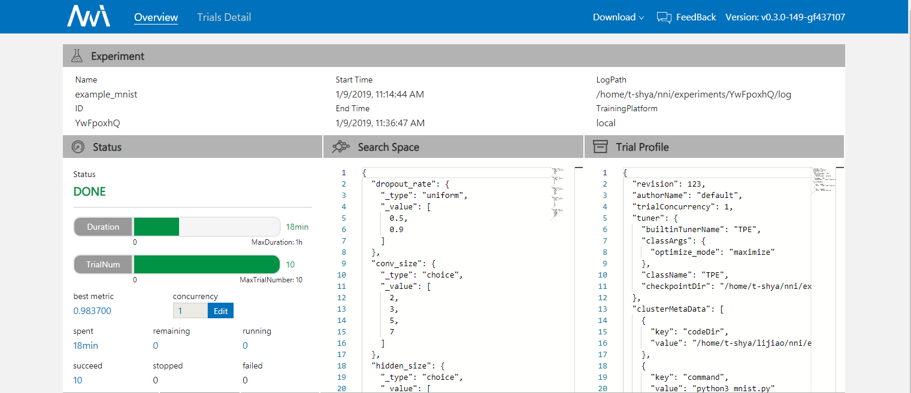
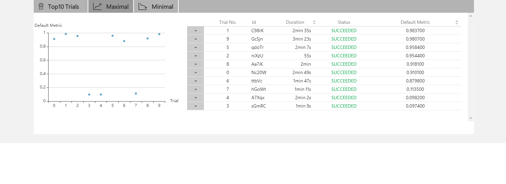
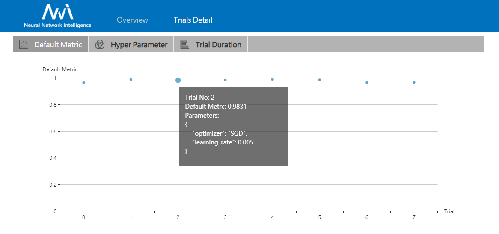
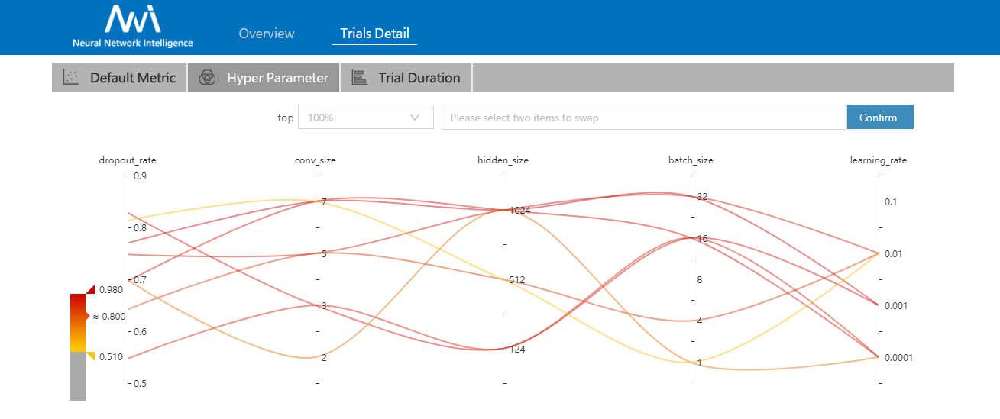
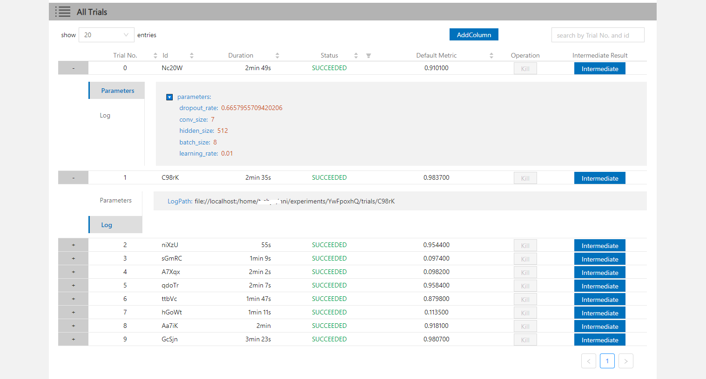
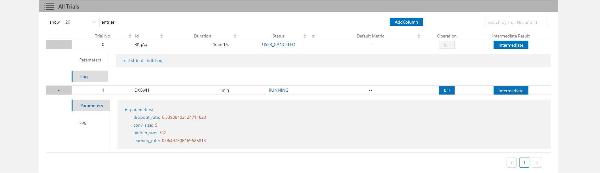
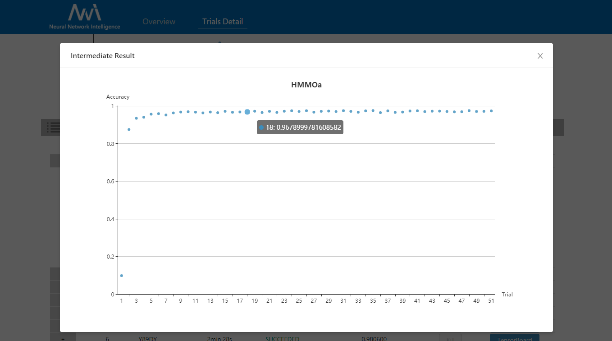

WebUI¶
View summary page¶
Click the tab “Overview”.
- See the experiment trial profile and search space message.
- Support to download the experiment result.

- See good performance trials.

View job default metric¶
Click the tab “Default Metric” to see the point graph of all trials. Hover to see its specific default metric and search space message.

View hyper parameter¶
Click the tab “Hyper Parameter” to see the parallel graph.
- You can select the percentage to see top trials.
- Choose two axis to swap its positions

View trials status¶
Click the tab “Trials Detail” to see the status of the all trials. Specifically:
- Trial detail: trial’s id, trial’s duration, start time, end time, status, accuracy and search space file.

- If you run on OpenPAI or Kubeflow platform, you can also see the hdfsLog.

- Kill: you can kill a job that status is running.
- Support to search for a specific trial.
- Intermediate Result Graph.
